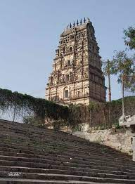
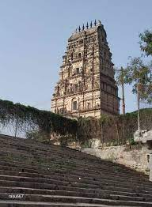

Ananthagiri Hills

Ammapalli

Nanajipur waterfalls

CHILKUR BALAJI TEMPLE

Ananthagiri Hills |

Ammapalli |
Nanajipur waterfalls |
CHILKUR BALAJI TEMPLE |
Osman sagar lake |
Ananthagiri Hills is located in Vikarabad district, Telangana, India. The water flows from these hills to Osman Sagar, also known as Gandipet lake, and Himayathsagar. It is one of the dense forests in Telangana. Ananthagiri Temple is located in this forested area. It is the birthplace of Musi river, also called as Muchkunda River, which flows through Hyderabad, 5 km from Vikarabad.
Ammapalli is a village situated 30 kms from Hyderabad and 5 Kms from Shamshabad. In this small village lies the ancient Sri Ramachandra temple. Built during the time of the Kalyani Chalukyas, it is between 800 to 900 years old. Though there are no stone inscriptions as to the date of the construction of the temple, the history has been told through generations and thus we know of its age. This temple has been used for many movie shootings and is believed to bring the movie success at the box office.
The Nanajipur waterfall, which is about 15 kilometers from the Shamshabad Bus Stop and 43 kilometers from Secunderabad, is a less-known tourist attraction in the Indian state of Telangana. It is definitely a must-see place, particularly now when the majority of us choose to visit areas surrounded by nature due to the pollution
Chilkur Balaji Temple, popularly known as "Visa Balaji Temple'', is an ancient Hindu temple of Lord Balaji on the banks of Osman Sagar in Rangareddy District in Telangana. It is one of the oldest temples in Hyderabad Dist earlier now in Rangareddy Dist. built during the time of Madanna and Akkanna, the uncles of Bhakta Ramadas.
Osman Sagar was created by damming the Musi River in 1920, to provide an additional source of drinking water for Hyderabad and to protect the city after the Great Musi Flood of 1908. It was constructed during the reign of the last Nizam of Hyderabad State, Osman Ali Khan, hence the name.